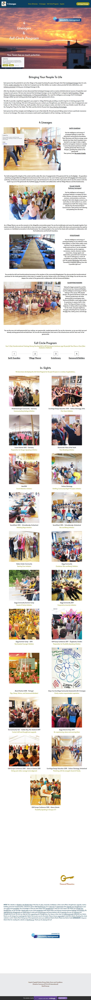

4 Lineages on Strikingly
Each person has the potential to serve the village or the project by being the space through which their Archetypal Lineage does its work. Clearly, modern education has no idea how to prepare you for this. Neither can modern culture provide the tools, distinctions, and initiatory processes to bring your Archetypal Lineage to life.
After four decades of research we have discovered that Archetypal Lineages exist as nearly unlimited external sources of inspiration and energy for each person. We have also learned that Archetypal Lineages can be classified into 4 categories: Earth Guardians, Village Weavers (Intimacy Journeyers), Evolutionaries, and Gameworld Builders. You need the intelligence and energy of all 4 Archetypal Lineages skilled-up and working productively together for your gameworld to thrive.
We offer to provide a significant upgrade in your project or village life through providing a month-long live-in training program that includes four 5-day trainings. We start at the ground up: your context, your thoughtware, your distinctions, your rules of engagement, your Codex, etc. We will find out what's up, what's possible, what are you trying to create, and what is in the way of better results. We will use the 'Frying Pan', 'Poop On The Table', 'The Wok', and the M.E.S.S. Process from Torus Meeting Technologies.
Each person has all four energies and intelligences to use in their daily life. Yet each person's Being seems to have a particular resonance to one or two lineages. This means not everyone would need to participate in all four trainings... but they could.